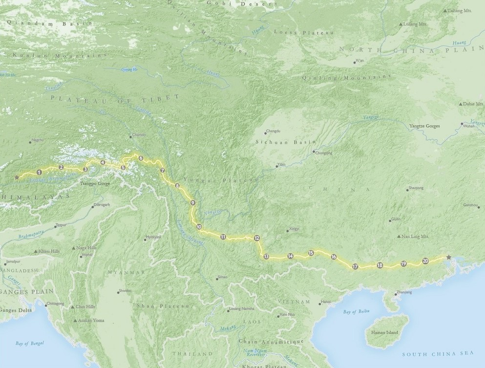

Toggle navigation
Menu
Zihan Song
WORK
ABOUT
BLOG
Bike Map of South West China
12,000' to Pacific, the best view in the world

This map is one of my projects from an advanced cartography class:create a map for a cycling competition for anywhere in the world and display it on a shaded relief terrain map. I chose China as the site for my fake competition, considering that's my hometown and there are various type of land covers there. I like my route although it's unrealistic. Cyclists need to bike from Tibet (its elevation is almost 12,000' and the Everest is there!) to Pacific Ocean. Hopefully it could come true and become the most excited cycling competition in the world.